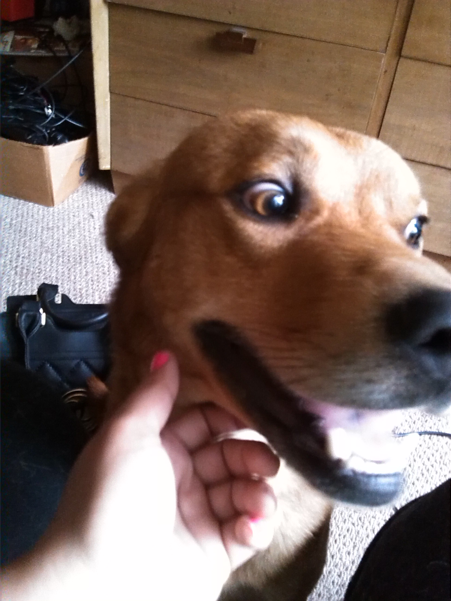
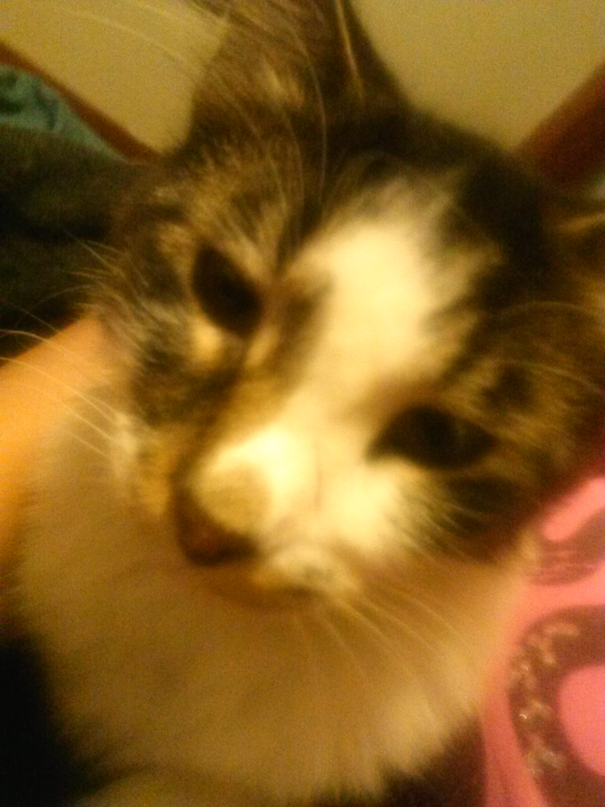
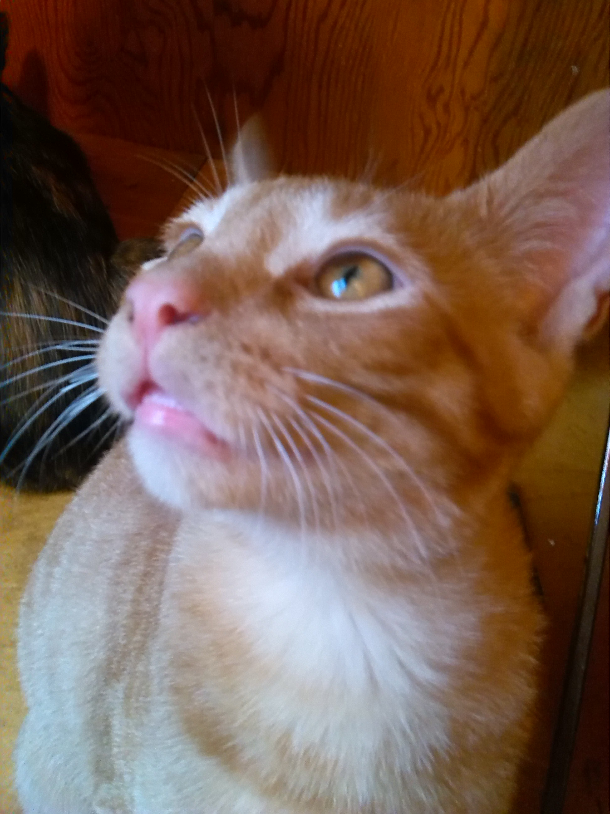
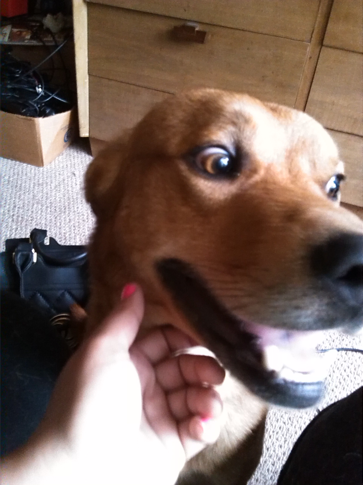
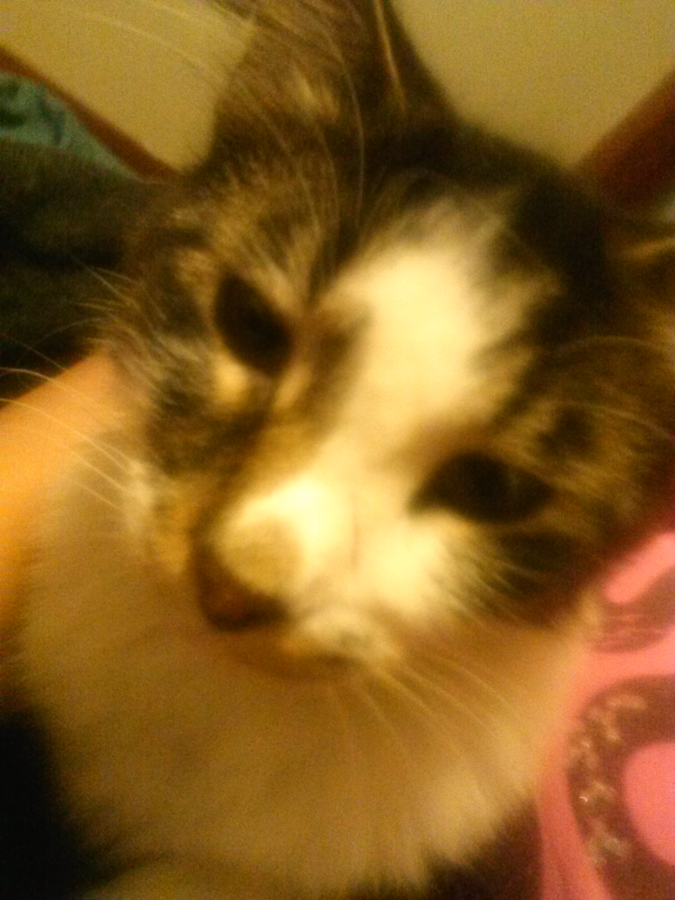
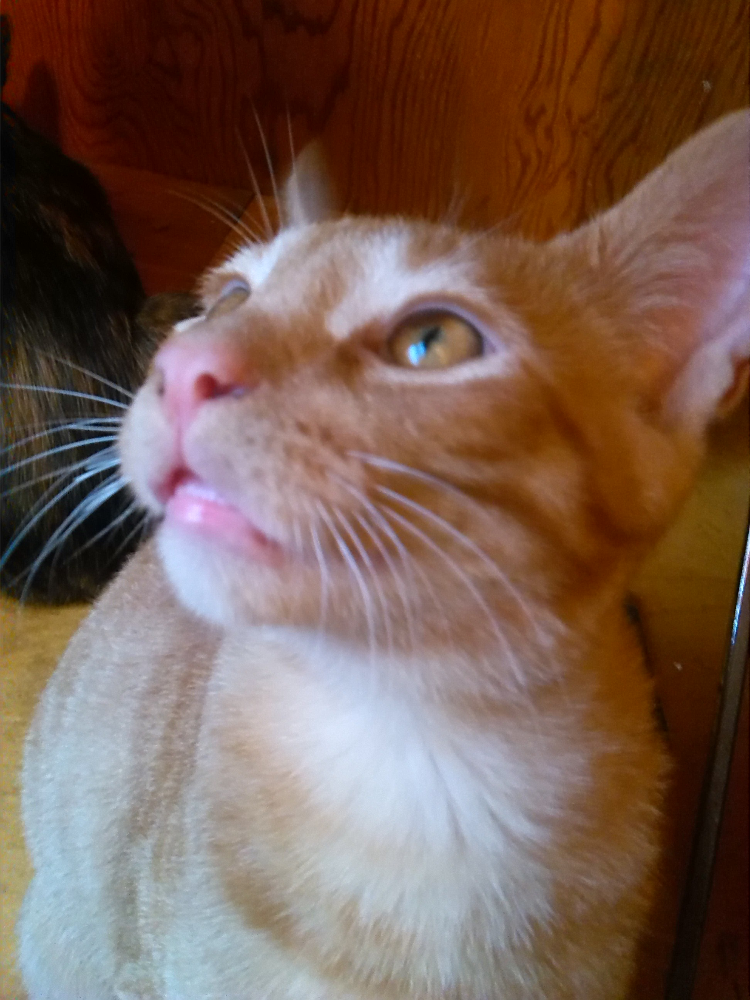

About Me
My Love For Monkeys
Ever since I can remember, I have always wanted a monkey. At one time in my life, my stepfather had me believing that I was actually going to get one. Together we made plans of how we would set my room up to accommodate my monkey and he also went as far as taking me to various pet shops to look at monkeys for sale. My favorite monkey is the Capuchin monkey (spider monkey). I wanted one just like the one in “Monkey Trouble”, but I would have settled for any monkey. The spider monkey has a life span of 25-40 years, so it would not suit me to get one at my age. However I did some research and found a monkey better suited for me, and that is the Pygmy Marmoset (Finger Monkey), which has a life span of 15-20 years
I have three dogs, a cat that thinks he is a dog and a turtle. All of my furry babies are older so I plan on getting one of these monkeys within five years. I know monkeys take a lot of care so I want to be fully prepared before I brings my new baby home. So, this website contains all of the information I believe is important to know before owning this type of monkey and how to care for them properly.
A few of My Babies Past & Present

 




